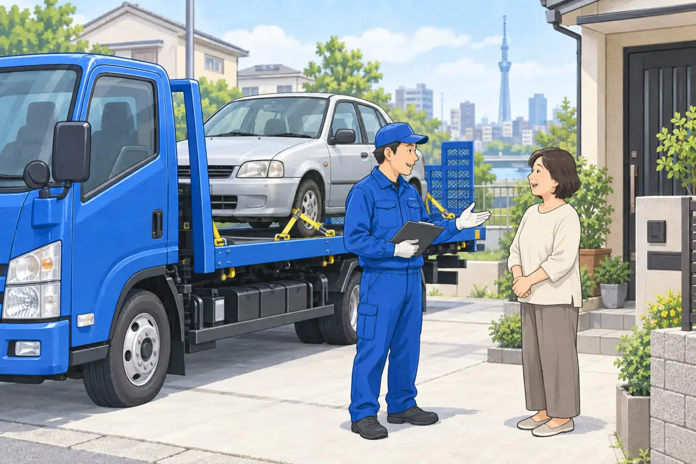
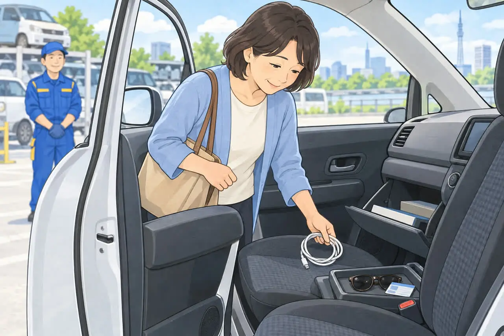
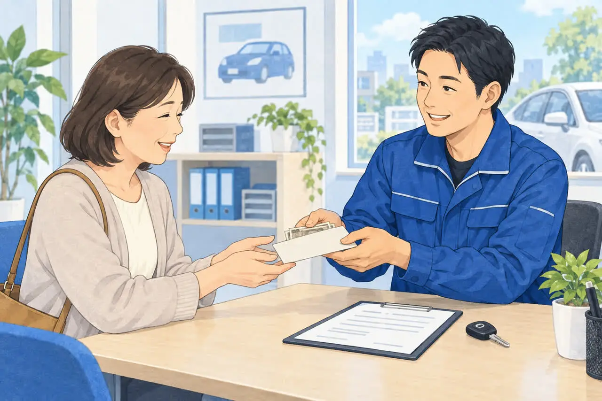

廃車をご検討中の方へ
廃車のご依頼から
現金お支払いまでの流れ
電話1本で進む3ステップ
「もう乗らなくなった車を手放したい」「故障して動かないけれど、どうしたらいいのだろう」。そんなとき、どこへ相談すればよいか迷う方も多いのではないでしょうか。
長く乗ってきた車を手放すのは、何度も経験することではありません。費用や書類のことが分からず、そのままになってしまうこともあると思います。
足立区の大崎商店では、廃車・事故車・動かなくなった車の引き取りをご相談いただけます。車種や状態によっては、その場での現金買取も可能です。
ご相談の入り口は、お電話1本。「車を処分したいのですが」とお伝えいただければ大丈夫です。この記事では、最初のご相談から引き取り、現金のお支払いまでを、3つのステップに分けてご紹介します。なお、電話だけですべての手続きが完了するわけではなく、お車の確認や必要書類のご準備も必要です。
ステップ1 まずはお電話で、車のことをお聞かせください

車に詳しくなくても大丈夫です
最初のお電話では、分かる範囲でお車の様子をお伝えください。専門的な言葉を使う必要はありません。
「エンジンがかからない」「事故のあとから動かしていない」「自宅の駐車場にしばらく置いている」といった説明で、ご相談を始められます。
お電話の前に、次のことを確認しておくと話が進めやすくなります。
- 車の名前やメーカー
- エンジンがかかるか、走れる状態か
- 車を置いている場所
- 引き取りを希望する時期
- 車検証や鍵が手元にあるか
すべてが分からなくても、調べ終わるまで待つ必要はありません。車検証があれば、お手元に置いてお電話いただくと、車の情報を確認しやすくなります。
心配なことも、最初にご相談ください
「古い車だけれど引き取ってもらえる？」「費用はかかる？」「自分でお店まで運べない」。こうした心配も、遠慮なくお伝えください。
また、家族名義の車や、車検証が見つからない車などは、その事情を最初にお話しください。必要な確認や準備が変わる場合があるためです。
大切なのは、分からないことをそのままにして依頼を進めないこと。「何を用意すればいいか」「どこまでお願いできるか」を、一つずつ確認していきましょう。
ステップ2 条件と日程を確認して、お車を引き取り

動かない車もご相談いただけます
エンジンがかからない車や事故車を、ご自身で無理に動かす必要はありません。大崎商店では、レッカー車による引き取りにも対応しています。詳しくは「エンジンがかからない車でも引き取ってもらえる？」をご覧ください。
買取価格がつかない車も、足立区江北の環七店から車で片道約30分圏内は、レッカー費用・出張費を無料でご案内しています。圏外でも、所在地と車の状態によっては無料で伺えます。事前にご案内しますので、まずはご相談ください。
足立区周辺にお住まいでも、実際の場所や車の状況を伝えたうえで、対応条件を確認しておくと安心です。電話では住所だけでなく、「自宅の駐車場」「月極駐車場」など、どのような場所に置いているかもお知らせください。
駐車場所の様子も大切な情報です
引き取りの相談では、車の状態に加えて、周りの状況も確認しておきましょう。
例えば、駐車場の入り口が狭い、屋根が低い、車の前に別の車が止まっている、といった場合です。タイヤがつぶれているなど、動かすときに気になりそうな点も、分かる範囲でお伝えください。
引き取り日については、「この日までに駐車場を空けたい」「立ち会えるのはこの曜日」といったご希望があれば、早めに相談しておきましょう。希望した日時に対応できるかを確認してから、予定を決めると安心です。
当日までに、車内の忘れ物を確認しましょう

車を引き渡す前には、車内やトランクに私物が残っていないかを確認してください。
特に忘れやすいのは、ETCカード、サングラス、充電ケーブル、駐車場のリモコンなどです。座席の下やドアの収納、ダッシュボードの中も見ておきましょう。
カーナビなどに自宅の住所や電話帳を登録している場合は、必要に応じて個人情報も消しておくと安心です。取り外して残したい用品がある場合は、ご自身で作業する前に相談してください。
ステップ3 査定内容を確認し、現金のお支払いへ

車種や状態によって買取金額が変わります
「廃車にする車だから、お金にはならないだろう」と思っていても、まずはご相談ください。大崎商店では、車種や状態に応じて買取をご案内しています。
ただし、すべての車に同じ金額がつくわけではありません。電話の段階で聞いた内容だけで判断できないこともあるため、買取の可否や最終的な金額は、お車の確認を踏まえて確かめましょう。
引き渡し前には、「買取金額はいくらか」「別にかかる費用はあるか」「いつ、どのように支払われるか」を確認しておくと、受け取りまでの流れが分かりやすくなります。
条件が整えば、その場で現金買取
大崎商店では、車種・状態などの条件により、引き取り当日の現金買取が可能です。ご依頼の際に、当日のお支払いができるか、必要な準備とあわせてご確認ください。
金額や条件について分からないところがあれば、引き渡し前に質問しましょう。納得したうえで手続きを進めることが、安心して車を手放すための大切なポイントです。
廃車の手続きもご相談いただけます
車を手放すときは、引き取りだけでなく、廃車の手続きについても確認が必要です。
大崎商店では廃車手続きを代行し、軽自動車を含む廃車手続き代行と自動車解体の手数料を無料としています。必要な書類は車の種類や名義などによって異なるため、お電話で個別にご確認ください。基本の書類は「廃車に必要な書類チェックリスト（普通車）」「軽自動車の廃車に必要な書類・準備チェックリスト」でもご紹介しています。
書類を準備するときは、案内された内容をメモしておくと安心です。「何を、いつまでに用意するか」に加えて、手続きが終わったことをどのように確認できるかも聞いておきましょう。サービス条件の詳細は、サービス詳細ページでもご案内しています。
初めての廃車相談は、分かることからで大丈夫
車を手放そうと思っても、「書類を全部そろえてから」「車の状態を詳しく調べてから」と考えると、なかなか動き出せないことがあります。
まずは、今のお車の様子と、ご希望をお聞かせください。「しばらく乗っていない車を片付けたい」「修理するか手放すか迷っている」など、現在のお気持ちからお話しいただけます。
相談内容や約束した日時は、簡単にメモしておくと、ご家族とも共有しやすくなります。長く乗った大切な車だからこそ、費用や手続きについて納得できる形で、次の一歩を進めていきましょう。
廃車・事故車のご相談は大崎商店へ
足立区周辺で車の処分をお考えの方は、まずはお電話ください。事故車や動かなくなった車の引き取り、必要書類などについてご相談いただけます。
電話で相談する 03-3854-4141大崎商店 環七店
電話：03-3854-4141
〒123-0872
東京都足立区江北7丁目1−3
営業時間：月〜土 10:30〜18:00
休業日：日曜・祝日
環七沿い／舎人ライナー
西新井大師西駅
大崎商店 入谷店
電話：03-3899-2837
〒121-0836
東京都足立区入谷7丁目5−11
営業時間：月〜土 9:30〜17:30
休業日：日曜・祝日・第2土曜
臨時休業などは、ホームページのお知らせでご確認ください。ご来店や引き取りをご希望の際は、事前にお電話いただくとスムーズです。
挿絵はサービスの流れを説明するためのイメージです。